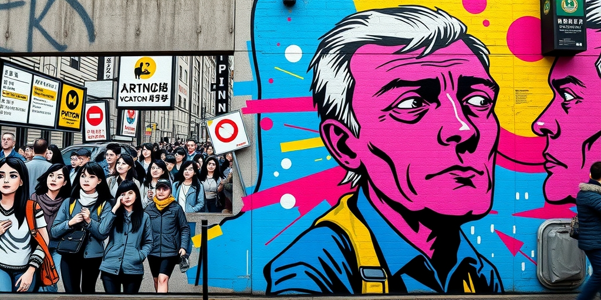
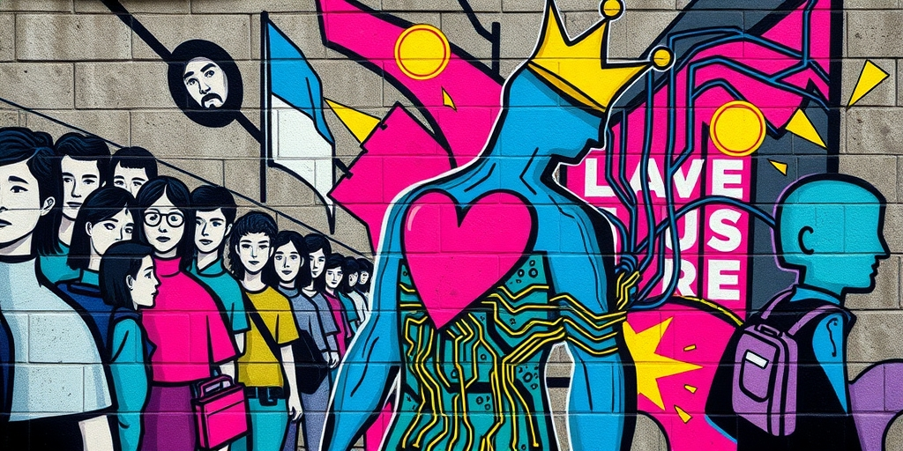
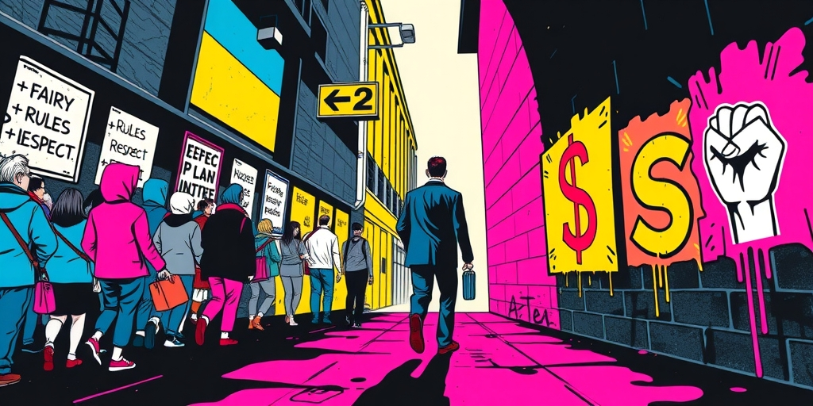
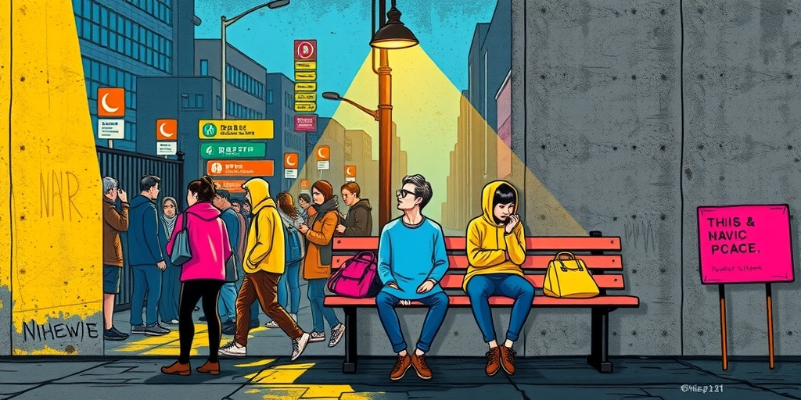

小汪老师的成长洞察 · 属于你的成长专栏
有一种人，他们的脸上装着两套表情系统：一套专供上位者，一套用来对待其他人。你看到的冷漠，不是情绪的疏忽，而是感知的彻底断线。

会议室里，领导只是轻微揉了揉太阳穴。他立刻察觉，起身去倒了杯温水，递过去时轻声说了句“您歇会儿”。而就在半小时前，旁边工位的同事接到家人病重的电话，声音都在发抖，他头也没抬，专注盯着自己的屏幕。这不是情商高低的问题，更不是忙或不忙。这是一种精密的筛选机制。他的感知系统，像一台只接收特定频段信号的雷达。权力、地位、资源的波动，是它唯一能捕捉的频段。对于这些信号，他反应灵敏，甚至过度解读。领导一个皱眉，他能解读出十种可能的不满，并迅速调整自己的姿态。
而那些来自平等或弱势位置的情感信号——痛苦、无助、悲伤——在这台雷达上，干脆显示为一片寂静的空白。他不是没看见同事的异样，而是他的认知系统里，没有为这种信号分配处理资源。这不是“坏”，这是一种结构性的缺陷，他的认知地图上，只有标注着“权力”和“利益”的等高线，其他地形，一片虚无。

我们常误以为，对弱者冷漠的人，是压抑了自己的同情心。内心有个开关，他选择了关闭。但真相更冷一些。对于那些高度权力导向的感知者，同情心的开关可能从未被安装。当一个人遭遇不公或苦难，在他们脑中激发的信号，不是“他好可怜”，而是更接近于“这和我有什么关系”或“这是他自己没本事”。这是一种认知上的免疫。不是战胜了情绪，而是情绪根本就没产生。他的心理资源全部用来计算一件事：眼前这个人的遭遇，是否会影响到我的权力和利益。
如果答案是否，那么这个人的痛苦，在他的世界里就等于不存在。反过来，一个强权人物流露出一丝脆弱，哪怕只是一个疲惫的叹息，却能立刻激活他全部的感知力。他能瞬间共情，因为强权者的状态，直接关联到他的生存策略和利益计算。所以你会看到，同一个人，能对远在天边的大人物充满“理解”，却对身边人的具体苦难毫无知觉。他的共情，是权力的衍生物，不是人性的本能。

“公平”、“尊重”、“规则”……这些词汇，他都能流畅地说出来。在需要的时候，他甚至可以把它们用得非常漂亮。但这些概念在他的认知里，是空洞的符号。就像知道“苹果”这个词，却从未尝过它的味道。他内心没有与之对应的真实体感。真正驱动他每一次选择、每一次表态、每一次站队的，是一个更原始、更具体的计算：此刻，谁更有力量？谁能决定资源的分配？谁能对我的前程构成威胁？
公理和正义是需要体感去支撑的。一个从小在权力关系极不稳定、随时可能被碾压的环境中长大的孩子，会飞速学会一件事：感知力量比感知对错更安全，更实用。谁有权力，我就听谁的；谁是弱者，我没有必要花精力去理解。这套生存策略在那个环境下是高效的。可怕的是，当环境改变后，这套操作系统依然在运行，最终固化成了人格结构的一部分。于是，抽象的“对错”永远无法战胜具体的“强弱”。
这也解释了为什么这种认知模式在社会中并不罕见。它不一定是临床意义上的自恋型人格，而是一种被特定环境强化的认知偏好。如果一个社会长期以权力作为最核心的排序逻辑，那么“感知权力优先于感知人性”就会成为许多人无意识的底层代码。它不是一种道德选择，而是一种被环境写入的生存算法。

那么，反过来想。那些能够自然地对他人苦难感同身受的人，是如何形成的？答案可能和“善良”这个道德标签关系不大，而和“安全感”这个生存状态关系密切。一个在稳定、安全、平等的关系环境中长大的孩子，他的世界里，权力和地位不是唯一的、甚至不是主要的威胁来源。他不需要时刻绷紧神经去扫描谁是强者、谁是弱者。他拥有认知上的“余裕”。这份余裕，让他能把心理资源分配给另一件事：去真正感知另一个人是什么感受，在乎什么，需要什么。
共情能力，在这种语境下，不是一种需要努力修炼的品德，而是一种在安全感土壤里自然生长出来的能力。当生存压力和权力焦虑降低，对人性细节的感知力就会自动上升。那些你以为特别“善解人意”的人，很可能只是因为他们成长的环境，没有逼迫他们把全部心智都用来进行权力侦察。他们有多余的心力，去关心一个表情、一声叹息背后的真实情绪。这不是他们更道德，而是他们更幸运。
写给你的话
现在，环顾一下你的四周。在你的职场、你的社交圈，甚至你的家庭里，这种“两张脸”的现象普遍吗？如果它普遍到让你觉得平常，那说明了什么？它说明的也许不是人品问题，而是我们共同呼吸的这套环境的默认逻辑。当权力感知成为生存的默认设置，对具体的人的感知力，就会系统性地萎缩。那么下一个问题是：在这套逻辑无处不在的环境里，你打算如何保护自己那点正在退化的、对“人”本身的感知力？
参考资料
[1] Stop Talking More And Communicating Less: Emotional Intelligence For Leaders (Forbes) https://www.forbes.com/sites/forbesbooksauthors/2026/06/01/stop-talking-more-and-communicating-less-emotional-intelligence-for-leaders/
[2] Blame easy social media access, not immigration, for poor U.S. test scores, top psychologist says (Fortune) https://fortune.com/2026/05/31/us-school-reading-math-test-scores-immigration-ed-tech-social-media/
小汪老师的成长洞察 · 属于你的成长专栏